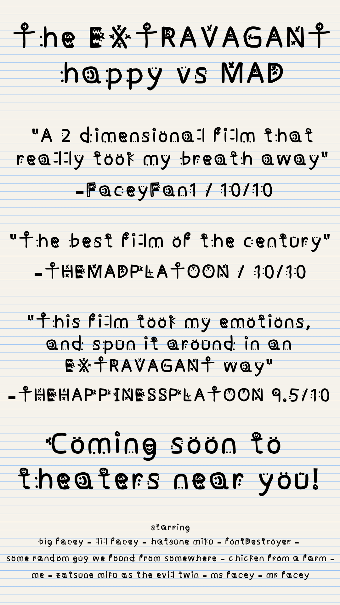
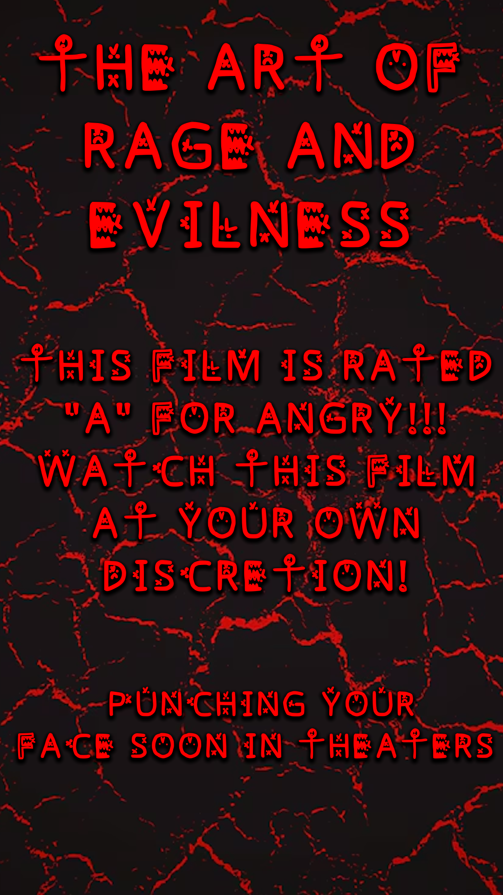

So now that you've read the use cases for the font on the main website
here are some real practical use examples!
So here's the first example. This poster is designed for a more general audience

This poster was made to be like a movie poster. Looking at this poster, you can see how the font adds to the goofyness of the poster.
This makes the poster feel somewhat more relatable to the viewer, as each letter is a face to express happiness.
You might have also noticed that the poster is quite readable. the font works pretty well used in sentences,
which helps a lot when using this font!
This poster is made to be more for an audience that's protesting (or in other words angry)

Not sure why I chose to make it like a movie poster, but it was so I could contrast the lowercase letters with a capital version
I think the font color and background contribute greatly to this, but also that each of the letters in the font are well... angry.
This makes the poster emit rage and anger as the reader reads each letter. This anger shows the viewer there's some motive/reason for this anger.
The font in this poster, just like the other movie poster, is quite readable. Which for a font like this is quite good.
Being able to use this font in various different settings is important for this font. Especially since this font can associate with emotions a bit
Facey font doesn't necessarily also have to be used for only posters (or specifically movie posters)
But can also be used as a form of art, mainly because of the way each letter is designed. I guess you'd use this font in a more funny way though
I can't really imagine using this font for a super serious use case, but this font could definitely be used as satire or for comedy.
I could see this font being used for more happy and upgoing uses. Such as a poster inviting people to like yoga or meditation lol.